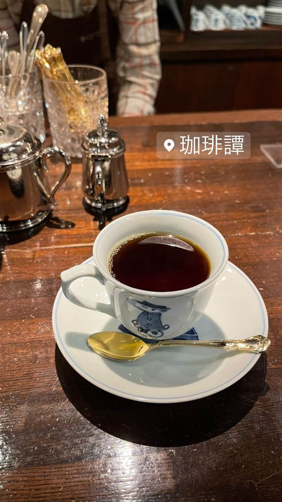

珈琲譚（かぴたん）
店名はポルトガル語で船長の意、江戸のオランダ商館長にちなむ
珈琲譚
用賀駅近くにある自家焙煎の喫茶店。店名「かぴたん」はポルトガル語で船長（キャプテン）を意味し、江戸時代のオランダ商館長の呼び名にちなむ。看板のカピタン・ブレンドは主人が厳選した豆を使う。
TRIVIA
豆知識
- 店名「珈琲譚」は「かぴたん」と読み、ポルトガル語で“キャプテン”を意味し、江戸時代のオランダ商館長の呼び名に由来する
REVIEWS
世間の評判
3.40食べログ
レトロな雰囲気と自家焙煎コーヒー
- 歴史を感じるレトロな空間でゆっくり大人が寛げるという声が非常に多い
- 自家焙煎のコーヒーやチーズトーストの味わいを評価する声がある
- 週末の午後は満席近くになるほど賑わうという声もたびたび見られる
食べログ 口コミ90件
| 看板 | カピタン・ブレンド |
|---|---|
| こだわり | 店内の焙煎機で自家焙煎し、豆をハンドピックしてハンドドリップで淹れる |
| どこから | 23区の外れ・近郊 |
| 営業時間 | 月〜日 09:00-18:00 |
| 場所 | 用賀 東京都世田谷区用賀 |
| メモ | 用賀駅東口から徒歩1分、レトロな内装のモーニングも人気の喫茶店 |
食べたもの：コーヒー
NEARBY
近い店・同じ系統の店
-
 ★
喫茶店 浅草
金龍（喫茶店）
元は旅館だった建物で味わうサイフォン式コーヒー
昼 ¥1,000～¥1,999 夜 ¥1,000～¥1,999
★
喫茶店 浅草
金龍（喫茶店）
元は旅館だった建物で味わうサイフォン式コーヒー
昼 ¥1,000～¥1,999 夜 ¥1,000～¥1,999
-
 喫茶店 御茶ノ水駅
自家焙煎珈琲 みじんこ
銅板でじっくり焼き上げる厚みのあるホットケーキ
昼 ¥1,000～¥1,999 夜 ¥1,000～¥1,999
喫茶店 御茶ノ水駅
自家焙煎珈琲 みじんこ
銅板でじっくり焼き上げる厚みのあるホットケーキ
昼 ¥1,000～¥1,999 夜 ¥1,000～¥1,999
-
 喫茶店 根津駅
カヤバ珈琲
大正5年築の町家建築で一度閉店後に地元NPOの手で復活した
昼 ¥1,000～¥1,999 夜 ¥1,000～¥1,999
喫茶店 根津駅
カヤバ珈琲
大正5年築の町家建築で一度閉店後に地元NPOの手で復活した
昼 ¥1,000～¥1,999 夜 ¥1,000～¥1,999
-
 喫茶店 恵比寿駅
ヴェルデ
40年以上毎日自家焙煎を続けるネルドリップ、食べログ百名店
昼 ～¥999 夜 ～¥999
喫茶店 恵比寿駅
ヴェルデ
40年以上毎日自家焙煎を続けるネルドリップ、食べログ百名店
昼 ～¥999 夜 ～¥999
-
 喫茶店 御茶ノ水駅
喫茶 穂高
昭和30年創業で山小屋風の内装をビル建替え後も忠実に復元した喫茶店
昼 ～¥999 夜 ～¥999
喫茶店 御茶ノ水駅
喫茶 穂高
昭和30年創業で山小屋風の内装をビル建替え後も忠実に復元した喫茶店
昼 ～¥999 夜 ～¥999
-
 喫茶店 三軒茶屋
MOON FACTORY COFFEE
京都の名店の姉妹店で味わう北海道美幌豆のハンドドリップ
昼 ¥1,000～¥1,999 夜 ¥1,000～¥1,999
喫茶店 三軒茶屋
MOON FACTORY COFFEE
京都の名店の姉妹店で味わう北海道美幌豆のハンドドリップ
昼 ¥1,000～¥1,999 夜 ¥1,000～¥1,999